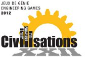

|  | Les Jeux de Génie 2012 sont tenus à l'ÉTS. |
Pour l'année 2012, les Jeux de Génie en seront à leur 22ème édition et depuis le début de cette grande aventure, plusieurs évènements marquants ont eu lieu. Les civilisations du monde entier ont connu différents bouleversements depuis 1990, mais cela n’est rien par rapport à toute l’histoire de l’humanité. L’année 2012 nous permet de prendre du recul et analyser ce que le passé nous a fourni autant au niveau social, culturel et technologique. C’est donc sous le thème des Civilisations que se dérouleront ces prochains Jeux permettant aux plus motivés d’entre-nous de participer à leur tour à un évènement marquant.
Cette application web a été développée par le club étudiant ApplETS.
Pour nous contacter, veuillez envoyer un courriel à l'adresse ci-dessous:
applets@ens.etsmtl.ca.